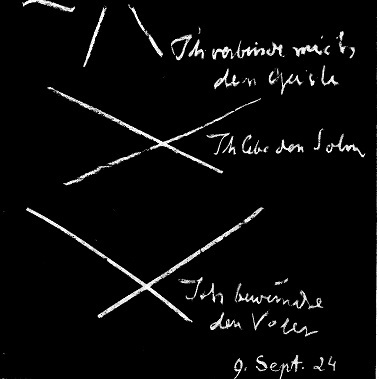

My dear sisters and brothers,
Despite the fact that a number of new members of this Esoteric School are present today who have not attended the previous classes, it will not be possible to repeat the introductory words. Therefore, I must insist that if the new members receive the verses from other members in the manner I will describe later, at the end of the lesson, then those who give the verses to the new members are duty bound to inform them of the conditions for membership in the School. So now we must immediately continue where we left off the last time.
First, however, let our souls again hear the words which resound from all the beings and events of the world to unbiased hearts and minds [Gemüte]. Everything in the following words was said to human beings in the past, is said to then in the present, and will be said to them in the future:
O man, know thyself!
So resounds the Cosmic-Word.
You hear it strong in soul,
You feel it firm in spirit.
Who speaks with such cosmic might?
Who speaks with such depth of heart?
Does it work through distant radiant space
Into your senses' sense of being?
Does it ring through weaving waves of time
Into your life's evolving stream?
It's you yourself who,
In feeling space, in experiencing time,
Create the Word, feeling foreign
In the soulless void of space
Because you lose the force of thought
In time's destructive flow.
We have seen how the person who follows these words coming to him from all the things of the world and from all the events of the world, feels the desire to leave the majestic, illustrious sensory world and enter into the world beyond the yawning abyss of being, which at first confronts the human soul as black, night-cloaked darkness. But the hope exists that in order to truly solve the riddle of humanity, what shines and is radiant in earthly life must become dark in order for the light which is in that other world, in which one's own self finds its being, comes from what appears at first as black, night-cloaked cosmic darkness.
And we have seen as we approached the path leading there in thought and feeling, the figure of the Guardian of the Threshold luminously emerged as though from a spiritual cloud-like form. We heard him speaking: for everything spoken here resounds from spiritual worlds on behalf of Michael, the leader of humanity's spiritual path in our times. For this School is the true Michael School. And he also spoke about human self-knowledge. But then he used words which at first are dismaying for the soul.
The Guardian calls us to stand close to him. He looks at us with earnest countenance. And he shows us how our willing, our feeling, our thinking appear before the countenance of the gods as imaginations. There this willing, this feeling, this thinking is not yet human; it is still animal-like. There the self-knowledge is dismaying, even shattering.
But we must pass through knowledge of that self, which is the result of the errors embedded in us by our times, our cosmic time, in order to press forward to true self-knowledge.
This erroneous self-knowledge, the knowledge of the self which we carry within us from the spirit of our times, is shown to us by the Guardian by letting the first of the beasts, which represents willing, to arise from the yawning abyss of being. Then, raising his hand and pointing to the yawning abyss of being, he lets the second beast arise, representing feeling. Again pointing to the yawning abyss of being, he lets the third beast emerge, which represents thinking.
They arise one after the other thus:
The first beast – the true spiritual form of our willing, created by the fear of knowledge, which can only be overcome by having the courage for spiritual knowledge.
And then the second beast – born from the hate of spiritual knowledge, which at the present time is in the subconscious of the Gemüt [soul, heart or mind] of all people, which can only be overcome by the right enthusiasm for knowledge, for the right heartfelt blaze of knowledge; whereas today nonchalance and tepidity in respect of knowledge, yes, hate of knowledge due to nonchalance and tepidity is in the hearts.
And then the third beast – created in its ghostly nature by doubt about the spiritual world that today gnaws at the souls' roots, and which can only be overcome if knowledge awakens in itself the strength to create in one's own soul [Gemüt] the things of the spiritual world beyond.
And the Guardian at the yawning abyss speaks the following words after we have come quite close:
Yet you must beware of the abyss;
Otherwise its beasts will devour
You, if you pass by me in haste.
Your cosmic age has placed them there
In you as enemies of knowledge.
Behold the first beast, the crooked back,
bony head, the scrawny body,
All its skin is a dull blue;
Your fear of creative spiritual being
Begot the monster in your willing;
Your fearless knowledge alone overcomes it.
Behold the second beast, it bares its teeth,
Mockingly it lies with warped countenance,
Yellow with gray spots is its body;
Your hate of spiritual revelation
Begot this weakling in your feeling;
Your burning thirst for knowledge must subdue him.
Behold the third beast, with cloven muzzle,
Its eye is glassy, posture slouching,
Dirty-red its form appears to you;
Your doubts in the power of spiritual light
Begot this ghost within your thinking;
To creative knowledge must it yield.
Only when you have overcome all three
Will wings sprout from your soul
To carry you over the abyss
Which sunders you from the knowledge fields
To which your heart desires to reach
By consecrating itself to strive for healing.
The Guardian speaks at the abyss:
Yet you must beware of the abyss;
Otherwise its beasts will devour
You, if you pass by me in haste.
Your cosmic age has placed them there
In you as enemies of knowledge.
Behold the first beast, the crooked back,
bony head, the scrawny body,
All its skin is dullish blue;
Your fear of creative spiritual being
Begot the monster in your willing;
Your fearless knowledge alone overcomes it.
Behold the second beast, it bares its teeth,
mockingly it lies with a warped countenance,
Yellow with gray spots is its body;
Your hate of spiritual revelation
Begot this weakling in your feeling;
Your burning thirst for knowledge must subdue him.
Behold the third beast, with cloven muzzle,
Its eye is glassy, posture slouching,
Dirty-red its form appears to you;
Your doubts in the power of spiritual light
Begot this ghost within your thinking;
To creative knowledge must it yield.
Only when you have overcome all three
Will wings sprout from your soul
To carry you over the abyss
Which sunders you from the knowledge fields
To which your heart desires to reach
by consecrating itself to strive for healing.
When the Guardian shows us this - the shattering picture of our own being which at first confronts us as the answer to the call “Oh man, know thyself!” –, once the Guardian has shown us this picture, he approaches us in order to give us a further clarification that can begin to support us again: a clarification about the third beast, which is interwoven with our thinking; about the second beast, which is interwoven with our feeling; about the first beast, which is interwoven with our willing. And he gives us a certain teaching in what he then says. He draws our attention to how we should feel about our earthly thinking.
My dear sisters and brothers, one feels, even exoterically, that this thinking by which we acquire the things and events of the world is something abstract, something shadowy, something unreal. What is then this thinking?
We must place what this thinking really is before our souls in pictures. We imagine ourselves in front of a corpse which has recently been abandoned by a human soul and spirit. We observe this corpse. As it is now, it can never have come into being in the world. It can be nothing of itself. It can only be the remains of a living human being, who was once within it, who must have first transfigured it. The corpse lies in the coffin. Let us keep this picture in mind.
Our psychic-spiritual life, which is our own true humanity, was living before it descended from the divine-spiritual world by means of conception and birth into a physical human earthly body. There above in the divine-spiritual world it was no shadowy, abstract thought, but a psychic-spiritual living, interweaving, creating, acting being. It was alive there. Then it descended into a human body; but it died by descending. And the thinking that we have between birth and death is the corpse of the living thinking we had before descending into earthly being.
Only, my dear sisters and brothers, when we feel our thinking this way, do we feel it esoterically in the right way and struggle upward to overcome the ghostly form of the third beast, do we ascend more and more to the purely angelic form of true thinking, the dead afterimage of which lives and pulses and interweaves and acts in our physical earthly body.
As long as we consider thinking as something living, we are not experiencing the truth; only when we consider our body as the coffin of dead thinking, and we feel it deeply, are we experiencing the truth. This is what the Guardian of the Threshold at the yawning abyss of being tells us, whose words we will then hear, words which can serve us as a mantric verse. He says it to us with special intimacy.
And when we turn from thinking and observe our feeling, then we must see and feel how normal feeling, which we believe is alive in us between birth and death, is only half alive, how it continually consumes and kills something in us, how in fact it makes us spiritually hollow. Thinking is dead, and feeling is half alive, it is basically only an image-form in us. And only when we feel that this earthly feeling is a weak, half-living reflection of the solar power that emits cosmic feeling throughout the entire cosmos as general universal love, then only do we feel correctly about feeling. This the Guardian of the Threshold tells us privately, in intimacy.
And only when we feel that our will, although it lives in us, is continually tempted and attacked by spiritual opposing powers, so that its strength does not serve the divine above, but the physical below; only when we feel these opposing powers, who wish to divert us in our will from our actual divine task and completely enmesh us in earthly existence, then we will feel how these opposing powers, by usurping our will, want to bring the future of the earth under their power. If they were able to do it, if we were not alert enough to dedicate our will to the Divine, and not to the Ahrimanic earthly powers, then the earth would become problematic for the gods to whom it has belonged from the its very beginning.
The Guardian tells us this as a clarification of the three beasts:
The third beast's glassy-eyed gaze,
It is the evil counter-image
Of thinking, that denies itself
In you and chooses death,
Forsaking the spirit-forces
Which before its earthly life
Was alive in fields of spirit.
The second beast's mocking countenance,
It is the evil counter-force of feeling,
Which hollows out your own soul
And creates an empty life in it
Instead of spirit-content which,
Before earthly existence was the soul's,
Enlightened by the sun's spirit power.
The first beast's bony spirit:
It is the evil creating power
Of will, which from your own body
Estranges your strength of soul
And devotes it to the opposing powers,
Who would steal in future time
Cosmic being from godly being.
The Guardian speaks:
The third beast's glassy-eyed gaze,
It is the evil counter-image
- it is only an “image”-
Of thinking, that denies itself
In you and chooses death,
Forsaking the spirit-forces
Which before its earthly life
Was alive in fields of spirit.
The second beast's mocking countenance,
It is the evil counter-force of feeling,
- first is “image”, the second “force” -
Which hollows out your own soul
And creates an empty life in it
Instead of spirit-content which,
Before earthly existence was the soul's,
Enlightened by the sun's spirit power.
The first beast's bony spirit:
- the escalation: “image”, “force”, “power” -
It is the evil creating power
Of will, which from your own body
Estranges your strength of soul
And devotes it to the opposing powers,
Who would steal in future time
Cosmic being from godly being.
And the Guardian at the abyss of being leads us ever closer to true self-knowledge, which can only be ours if light arises beyond in the black, night-cloaked darkness. Therefore in the most varied ways he shows us what he first showed us in the forms of the beasts, what he then showed us in the form as it pertains to this mantric verse, and what he now once again describes, in order that we come ever and ever closer to self-knowledge, for us to have wings to cross the abyss of being, for with human feet, with heavy human feet, that is, with the outer illusions, with maya-reality, we cannot cross.
After having given us this mantric verse in confidence, the Guardian now indicates to us how we should further feel about thinking, how we should not feel it as a being; for then we are still weaving illusions if in this thinking that we have as human beings on the earth we see anything else but seeming. Selfhood being, that is, our true, real being, hides itself in thinking, doesn't live in thinking – the Guardian says. One can do nothing else but submerge into the seeming of thinking ever more, until one reaches, by submerging deeply, ever further, into the immeasurable cosmic ether, in which one at first dissolves with the soul.
If our selfhood at least feels wavering in the world's seeming, then we should revere the leading beings of the higher hierarchies who guide us. Here we feel that we need these leading beings of the higher hierarchies.
Then the Guardian exhorts us to turn from thinking to feeling, to perceive the streaming feeling in us. Thinking is still naught but seeming. But what we feel stands at least halfway close to our being. We come deeper into our own being when we feel than when we think; but we are not yet there. We are in half of our own being when we are feeling; for feeling has something unclear in it, and it is also never firm: seeming and being are intermixed in feeling. The selfhood which we seek – selfhood in the good sense of the word is – tends towards seeming. We should now submerge into seeming, into a being that is only apparent, into a seeming that energizes itself to half a being; there cosmic forces hold us, which are not mere seeming, but halfway to being: cosmic soul forces. There we should ponder in this interweaving of our own being in weaving cosmic ether; there we should ponder the living power of our own soul, which we cannot ponder by thinking because thinking is seeming.
Then we should submerge in the will, which we feel to be the being hidden in us. We cannot grasp it. But the will acts as thrust and force: being. This will climbs up from all the seeming and creates our own being, our own true being. We should turn our lives towards it. It is filled with the power of the cosmic spirit. Our own being should grasp the cosmic creative power, which fills all space, all times, all spiritual domains, and submerge in the will.
At the edge of the abyss the Guardian speaks:
See in yourself the weaving thoughts:
Cosmic seeming confronts you,
Selfhood as such hides from you;
Plunge down beneath the seeming:
Etheric essence flows in you;
Selfhood being should revere the
Guiding nature of your spirit.
Perceive within the flow of feeling:
Where seeming and being within you merge,
Your selfhood tends towards the seeming;
So plunge down in seeming being:
And in you are the cosmic-psychic forces;
The selfhood, it should then ponder
Your own soul's powers of life.
Let act in you the thrust of will:
Which climbs up from all the seeming
With your own self creating;
Turn your life in full toward it:
Filled it is with cosmic force of spirit;
Your own self should truly grasp
Creative cosmic power in the spirit-I.
I will write this mantra on the blackboard next time, and explain it with its characteristics.
But now let us turn again to all that has spoken to the human being in the past, to what speaks in the present, to what will be spoken in the future, what will be required of him as the most holy on his life's path: self-knowledge.
O man, know thyself!
So resounds the Cosmic-Word.
You hear it strong in soul,
You feel it firm in spirit.
Who speaks with such cosmic might?
Who speaks with such depth of heart?
Does it work through distant radiant space
Into your senses' sense of being?
Does it ring through weaving waves of time
Into your life's evolving stream?
It's you yourself who,
In feeling space, in experiencing time,
Create the Word, feeling foreign
In the soulless void of space
Because you lose the force of thought
In time's destructive flow.
The next esoteric lesson of this First Class will be next Thursday at eight o'clock.
I must also say that the verses, which are given as mantric meditation verses from the Guardian of the Threshold on behalf of Michael, are only for members of this School. Those who for any reason could not acquire them personally, may receive them from another member of the school who has them. However, permission must be requested in each case from either Dr Wegman or from me. This is not merely an administrative measure, but means that everything in our anthroposophical movement must be based on reality from now on. And this statement begins with the permission as a real fact, not as a mere administrative measure. The verses may not be sent by mail. Only the person who is to give the verses to another may request permission from Dr Wegman or from me. Not the one who is to receive them, but the one who gives. One asks someone who can give them, and that one then asks.
If anyone has written down something other than the verses themselves, then I ask them to only keep it for eight days and then burn it, in order that the content of the School, which only has meaning when the Michael stream flows through it, not get outside and thereby become ineffective. It is a fundamental occult axiom, which must be observed.
And we are in an earnest occult School, in the real School of Michaeli, and thus give what flows through this school in the Michaeli Sign: [drawn on the blackboard]
and give it in the sense of the Rose Cross, with the symbol of the Rose Cross:
Ex deo nascimur [the lower seal is drawn on the blackboard]
In Christo Morimur [the middle seal is drawn on the blackboard]
Per spiritum sanctum reviviscimus [the upper seal is drawn on the blackboard]
And while making this seal and sign we think of Christian Rosenkreuz:
[beside the lower seal is written:]
I revere the Father
[beside the middle seal is written:]
I love the Son
[beside the upper seal is written:]
I unite with the spirit
Per signum Michaeli:
[the michael sign – above red – is made]
[as each of the seal gestures is made, the following is spoken:]
Ex deo nascimur
In Christo morimur
Per spiritum sanctum reviviscimus